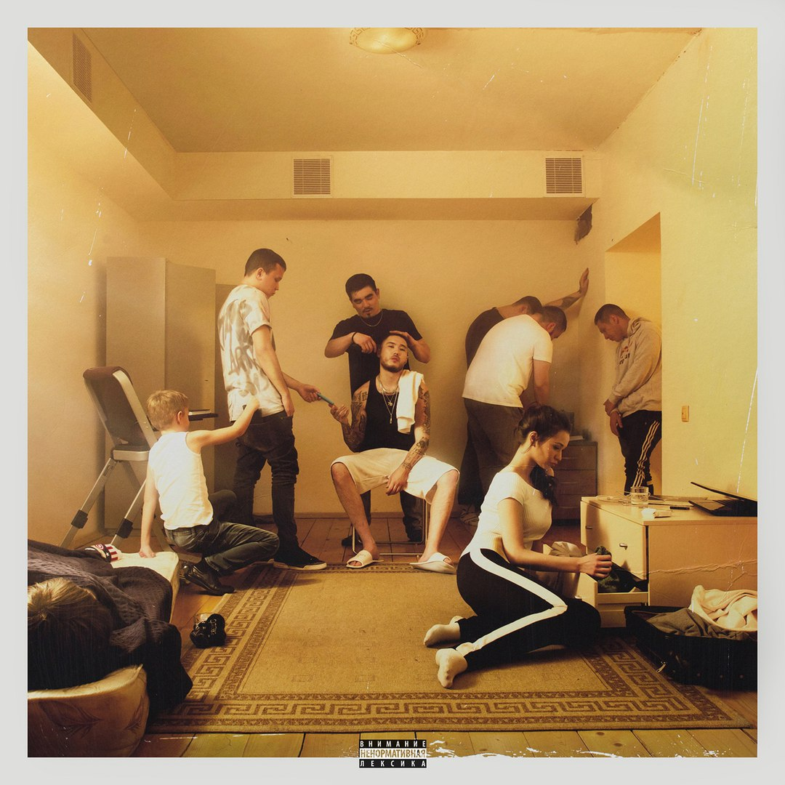
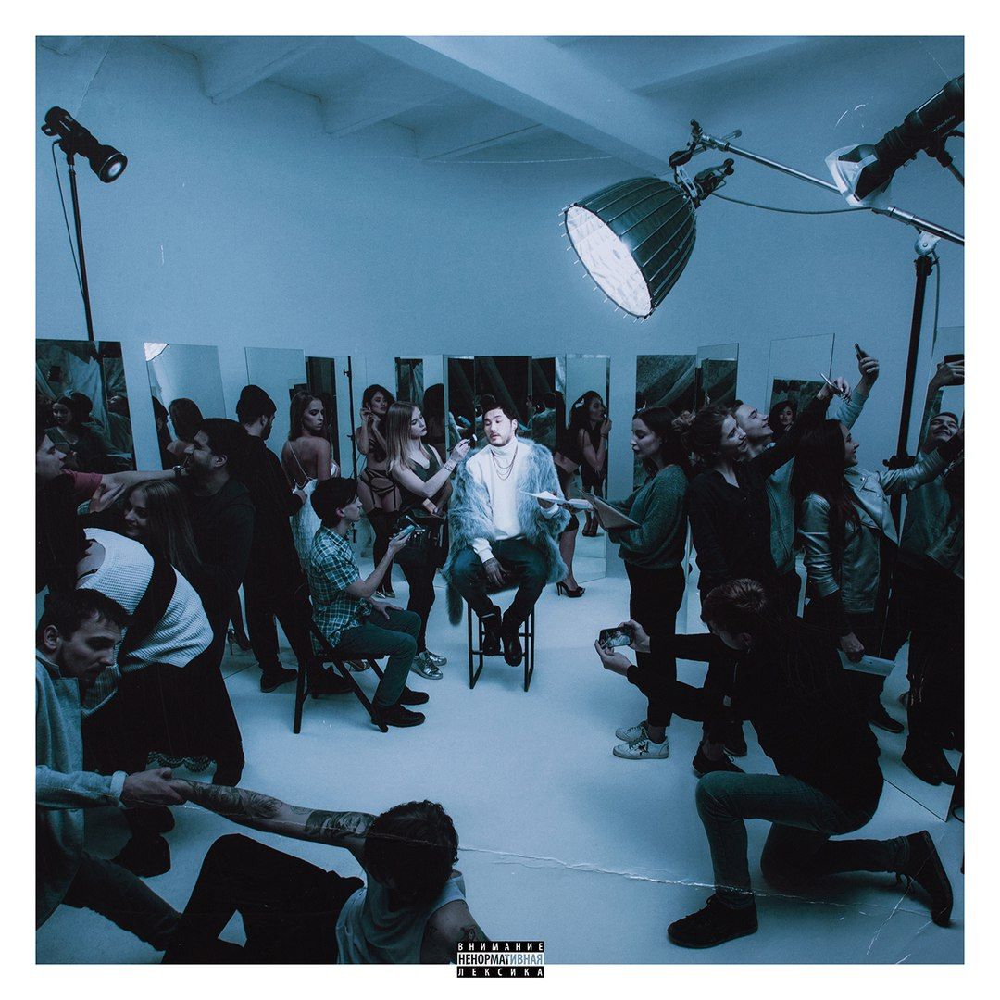

Вышел новый альбом Скриптонита!
Это концептуальная пластинка в двух частях — "Уроборос: Улица 36" и "Уроборос: Зеркала"
Второй за этот год альбом Скриптонита — большая концептуальная пластинка из двух частей: "Уроборос: Улица 36" и "Уроборос: Зеркала".
Слушать в VK
"Уроборос: Улица 36"
- 1. Интро: время возвращаться
- 2. Животные
- 2. Животные
- 3.Мистер 78
- 4. Пацан
- 5. Сливочное масло
- 6. Положение
- 7. В натуре
- 8. Мистер 718 2 (ft. Niman)
- 9. Твой микстейп (скит)
- 10. Трата времени
Слушать в VK
"Уроборос: Зеркала
- 1. Интро 15
- 2. Братик
- 3. Интервью
- 4. 1000
- 5. лучше всех
- 6. О счастливчик (ft. 104)
- 7. Слюни
- 8. Братик 2 (ft. 104)
- 9. Зеркала
- 10. Не надо меня узнавать
- 11. Вчера ночью
^Наверх